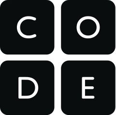

This website is a guide for the Code.Org tutorial on AP Computer science principles. The content on this site is designed to aid the user and is not for the purpose of cheating. "AP Computer Science Principles offers a multidisciplinary approach to teaching the underlying principles of computation. The course will introduce students to the creative aspects of programming, abstractions, algorithms, large data sets, the Internet, cybersecurity concerns, and computing impacts."-AP Central, Course Description.
Code.org is an online nonprofit encouraging students to embrace STEM education and to increase technological awareness. They focus on using online courses to teach students about the basis for the internet, and to prepare them for the AP CSP test.
